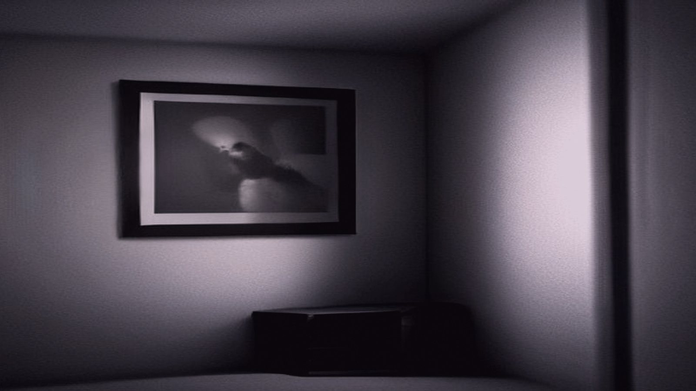
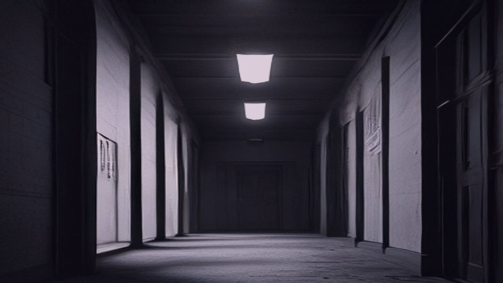
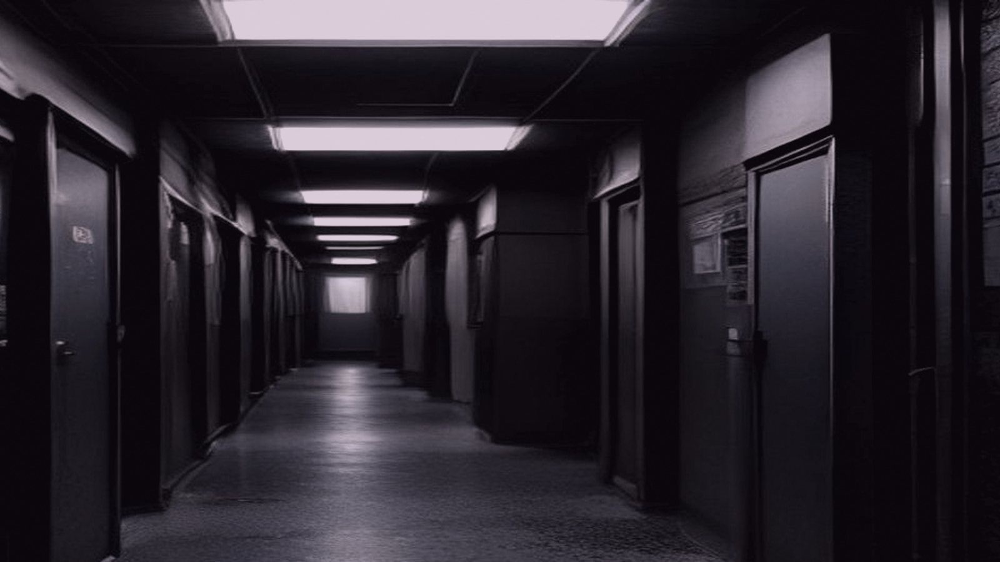
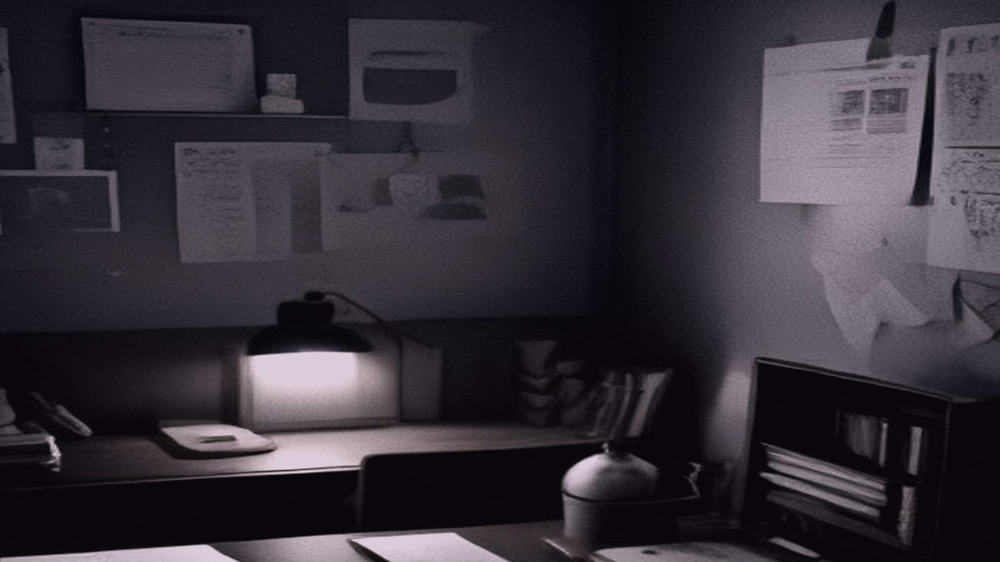

Constance Ashgrove poured steaming hot water into the pitcher on the nurse's station, her eyes scanning the tidy rows of wheelchairs as she worked. Six months sober, she'd been doing a favor for her cousin Rachel, who'd taken a job as the activities director at Willowbrook Manor. Constance had offered to help with the morning routine in exchange for a place to rest while she got her rig serviced.
The residents stared back, their faces a map of wrinkles and slack skin, but they didn't react when Constance said good morning, not that anyone expected them to anymore. This wing was reserved for the ones who'd lost their speech – what the hospital staff called "non-verbal" patients. It wasn't Constance's favorite part of the job, but it paid the bills and kept her on the road.
As she poured the water into cups, a soft hum filled the air from the radio behind the nurse's station. Constance didn't even notice, too focused on getting the coffee ready for the staff meeting. The residents just sat there, some slumped in their chairs, others propped up with pillows. She made her way down the row, topping off cups and saying gentle hellos that went unanswered.
A faint scent of disinfectant hung over everything, but it was mostly overridden by the stale smell of the air conditioning vents. Constance breathed through her mouth to avoid the musty taste that seemed to cling to every surface in this place. She'd been on the road long enough to recognize the stench of institutional decay – a mix of burnt food, antiseptic wipes, and stale cigarettes.
The nurse's station was neatly organized, with charts and files stacked behind a narrow desk. Constance had spent the previous evening going over the residents' records, trying to remember who'd lost their speech and why. The files were all color-coded, but the details blurred together after a while – so many stories of stroke, dementia, and Alzheimer's, each one a different shade of grey.
She poured herself a cup, black with two sugars, and sipped as she went back down the row, checking the residents' water levels. The morning sunlight streaming through the windows made everything look like it should be brighter – but in here, nothing seemed to change.
Constance's gaze drifted up to the ceiling, following the thin wires that supported the sprinkler system. Her eyes lingered on the small monitor mounted discreetly in the corner of the room. It displayed a security feed from the wing's camera, its black and white image flickering softly.
She frowned, her mind clicking into gear as she calculated the difference between what was happening now and what the camera showed. The discrepancy took her a moment to notice, but once she saw it – two minutes ahead – her thoughts snapped back into place. It was probably just a lag in the system, or maybe they'd set it up that way to provide an extra layer of security.

Constance made a mental note to check with maintenance when she finished her rounds. She didn't want to think about anything more complicated than a technical glitch right now. The residents were already getting anxious enough without her adding to their stress.
She turned away from the monitor, resuming her inspection of the room. Everything looked normal – the usual assortment of wheelchairs and walkers, the scent of disinfectant hanging in the air. As she checked the water levels on each resident's bedside table, Constance found herself glancing up at the camera again.
This time, she didn't even register it as two minutes ahead. Just a minor delay, like when her phone took a beat to sync after she'd connected it to the dash. She shook off the thought and focused on the task at hand – making sure everyone was comfortable for another day of silence.
She straightened, smoothing out her coveralls as she turned to leave the room. Her eyes caught on the small window above the nurse's station, where a few wisps of cloud drifted lazily across the sky. A faint memory stirred in the back of her mind – something about her old truck, its radio going on ahead when it was parked.
Constance pushed the thought away, letting her gaze drop to the floor. She needed to get moving. The residents were waiting, and she still had a long day ahead of her.
The sunlight streaming through the window caught the dust motes dancing near the ceiling, creating a faint shimmer that made her blink. She blinked again, focusing on the next room down the hall – Mrs. Henderson's wing, where the silence was just as oppressive as anywhere else.
Constance walked down the hall, her boots echoing off the walls as she made her way to Mrs. Henderson's room. The silence was a familiar presence now, but it still made her skin prickle in anticipation. She checked the chart on the door – yes, 9:00 a.m., music therapy. Constance nodded to herself and pushed open the door.
Inside, the residents sat in their wheelchairs, staring blankly ahead. Constance began to write on Mrs. Henderson's chart, her hand moving swiftly as she filled out the daily report. But as she signed her name at the bottom, a flutter of doubt caught her breath. For a moment, her hand had felt...different.

Constance shook off the thought, her eyes scanning the chart with a practiced ease. She must have just been tired. That was it. Her handwriting had always been a bit sloppy on mornings after bad coffee, that's all. But as she flipped through the charts of the other residents, her hand moved with an wrong confidence. Each signature was neat and even, no stray strokes or smudges to be seen.
She tried to chalk it up to practice making her handwriting more legible for the new nurse on staff, but a small voice in the back of her head whispered that it wasn't just habit. Constance glanced down at her hand, and it still looked...different. She shrugged, tucking the thought away as she moved on to the next room.
As she walked, the ring in her pocket jingled softly against her leg. Keys, a spare set for her old truck's ignition. What was that one key for, again? Constance's mind snagged on it, but she couldn't quite place it. Must have been there since she'd cleaned out her glove compartment last week. No matter – it wasn't like it opened anything important. Just another forgotten thing to add to the list.
Constance stopped at the nurse's station on her way out of room 214. "Hey, Henderson? Have you seen the phone list for today? I need to make a call."
Henderson looked up from the chart she was scribbling in. "Sorry, Constance, but we're having some issues with our landline. It's been down all morning."
Constance's eyes narrowed. "What do you mean it's been down?"
Henderson shrugged. "Maintenance says it's just a faulty line. They're supposed to be out here soon to fix it."
Constance frowned. She'd made countless calls from this very nurse's station, always getting through without issue. But now...She checked her watch: 9:27. "Is it just our wing? I could try calling from the front desk or something."
Henderson shook her head. "They're working on it everywhere in the facility. They say it's just a maintenance thing."
Constance's gut tightened. This was not normal. She checked her phone – dead battery, of course. She'd been meaning to charge it. Great. But she should be able to get a signal here, at least. She walked over to the nearest payphone, its metal exterior gleaming with a faint patina of grime.

The receiver hung limply in her hand, the phone itself locked in a silent scream of static. Constance yanked the cord loose, trying again on the next payphone down the hall. No luck there either.
A quiet shiver crept up her spine as she realized it wasn't just the phones that were out. The air conditioning unit in this wing suddenly roared to life, its rattling growl making conversation impossible. Constance felt a trickle of sweat on her upper lip and wiped it away with the back of her hand.
Outside, a faint fog began to seep over the nursing home's grounds – not quite a mist, but a haze that blurred the edges of things. Constance sniffed the air: damp earth, wet concrete, and the sweet tang of decay. It was as if winter had crept in overnight, its chill seeping into the very bones of the place.
Constance's fingers moved across the clipboard with a newfound fluidity, her handwriting looping and curving in a way it never had before. She tried to tell herself it was just muscle memory from six months of daily journaling, but the lines were smoother, more confident. Her mind flashed back to the first time she'd noticed this... alteration. She'd brushed it off as fatigue or a side effect of her recovery, but now it gnawed at her. She scribbled a few more notes, watching with growing unease as her hand seemed to take on a life of its own.
In the room adjacent to hers, a light flickered, casting faint shadows on the walls. Constance knew she'd turned off that lamp hours ago when she left for her rounds – it was 9:27 now, and she still had a stack of charts to go through. But the light persisted, like a lonely sentinel in an empty space.
The silence in this wing was starting to feel oppressive, weighing on her shoulders like a physical force. Constance's skin prickled as she tried to recall the last time she'd heard a voice – any voice – in this place. Her memories of the morning were hazy, but one thing stood out: the sound of her own name called out in the hallway. That was just Henderson, she told herself, but the name echoed with a strange, hollow finality.
She took a deep breath and tried to shake off the feeling, focusing on the clipboard in front of her. But as she wrote, her hand began to tremble ever so slightly – just enough that the pen scratched out uneven lines on the paper.
Constance's hand cramped around the pen as she tried to steady her writing, but her eyes kept drifting to the door. The air in the room seemed to thicken, like a warm breeze had stalled on its way out. She pushed back from the desk, feeling the chair creak in protest.
"What's going on?" she muttered, rising to her feet.
The other residents, usually silent and immobile, now watched her with vacant stares, their eyes unblinking. Constance's skin crawled as she approached them. Something was off – a scent like burnt plastic wafted from the air conditioning vent above, and the quiet, usual stillness of the room seemed to vibrate at an odd frequency.
She checked the door, but it was still locked, just as Henderson had assured her. Constance's eyes scanned the room, taking in the rows of beds, each one empty except for a single, still figure. Something about them seemed...off. Their blankets were tucked tight, and their pillows supported at a peculiar angle.
Constance's breathing quickened as she stepped closer to the nearest bed, her toes sinking into the worn carpet. The silence was oppressive now, like a weight pressing down on her chest. She reached out to adjust the pillow, but her hand hesitated, just above the coverlet. The mattress seemed...stirred.
A low rumble grew louder, and Constance's ears popped as she felt it – a gentle pressure building in the room, pushing against her eardrums. It was like the quiet before a storm, when the air charged with electricity, making every hair stand on end.
She stumbled back from the bed, her eyes locked on the figure beneath the blanket. For an instant, it seemed to...shift, its shoulders rising and falling in a slow, shallow breath. Constance's heart lurched as she realized – the figure was not still at all.
Constance stumbled back from the bed, her heart pounding in her chest. She couldn't take her eyes off the figure, which now seemed to be making a slow, deliberate movement under the blanket. The air in the room was charged with electricity, making every hair on her body stand on end.
She spun around, searching for a way out, but the doors were still sealed behind her. Panic set in as she realized she was trapped. She frantically scanned the room for a phone or an alarm, but there was nothing to be seen. The only sound was the low rumble, growing louder by the second.
She tore down the hall, bursting into Henderson's office. His desk phone lay abandoned, the receiver still in its cradle. Constance snatched up the receiver and dialed 911 with shaking hands. The digits seemed to blur together as she waited for an answer.

A voice crackled over the line, "Emergency services, please hold." Constance's heart leapt at the familiar phrase, but then the voice continued, "You have a scheduled appointment at 9:30 a.m. with Nurse Jenkins. Please take your seat in room 217."
Constance's mind reeled as she stared at the phone. Scheduled? Appointment? She remembered the nurse coming by earlier to take her vitals, but...it wasn't routine care that had her here today. The realization dawned on her, heavy and suffocating: this entire sequence was planned. Everything – the locked doors, the sealed windows, the faint silence of the residents – it was all part of a deliberate setup.
The voice on the phone droned on, "Please confirm your appointment time." Constance's grip on the receiver tightened as she felt the room spin around her. She was trapped in a clinical experiment, and she had been playing along the whole time. The figure in Henderson's bed wasn't just moving – it was waiting for her to realize the truth.
The fluorescent lights hummed on, casting an unforgiving glare over the nursing home's administrative offices. Inside, a young woman with a neatly pinned-up ponytail sat at a desk, tapping her pen against a clipboard as she reviewed Constance Ashgrove's file. The appointment schedule for 9:30 a.m. was scribbled in red, indicating an urgent note from the research team.
The woman, whose name tag read "Emily", checked off a series of boxes with a neat black pen. "Vital signs monitored at 9:00 a.m., 9:27 a.m., and again at 9:30 a.m.," she read aloud to herself. "No notable discrepancies in the patient's behavior or vitals."
A soft beeping sound came from the printer behind her as it spat out a new page of records. Emily set aside Constance's file, replacing it with a fresh sheet of paper. She began typing on the computer, fingers moving swiftly over the keyboard as she recorded the day's events.
The office door creaked open, and a middle-aged man in a white coat entered, carrying a cup of steaming coffee. "Morning, Emily," he said cheerfully, setting his cup down on her desk. "How's the paperwork going?"
Emily smiled and gestured to the clipboard. "Just about done with Constance Ashgrove's file." She paused, reaching for the paperclip that held together a sheet of notes. As she clicked it into place, the faint sound echoed through the office: click.